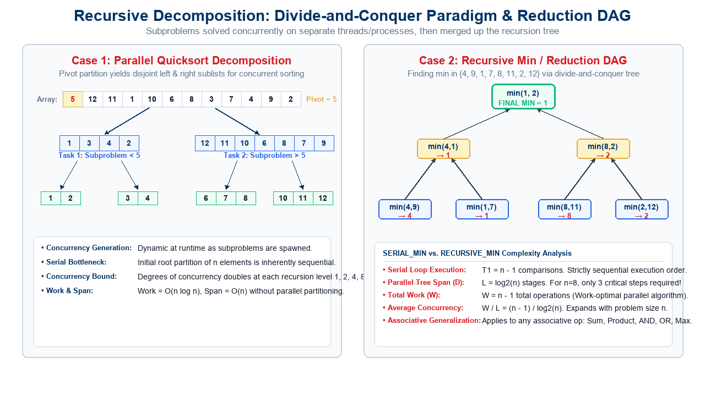
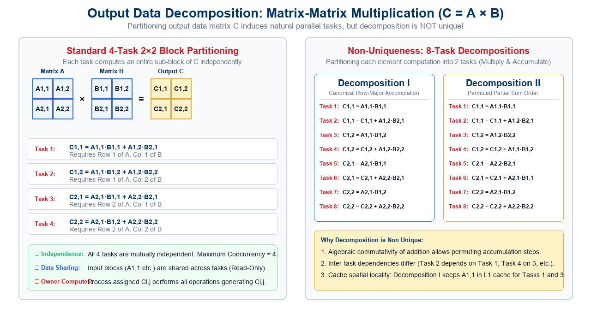
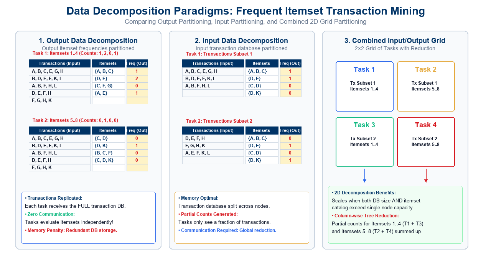
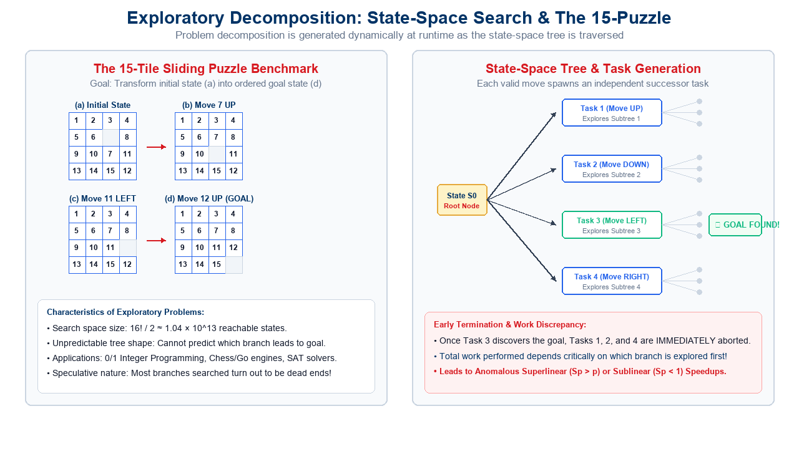
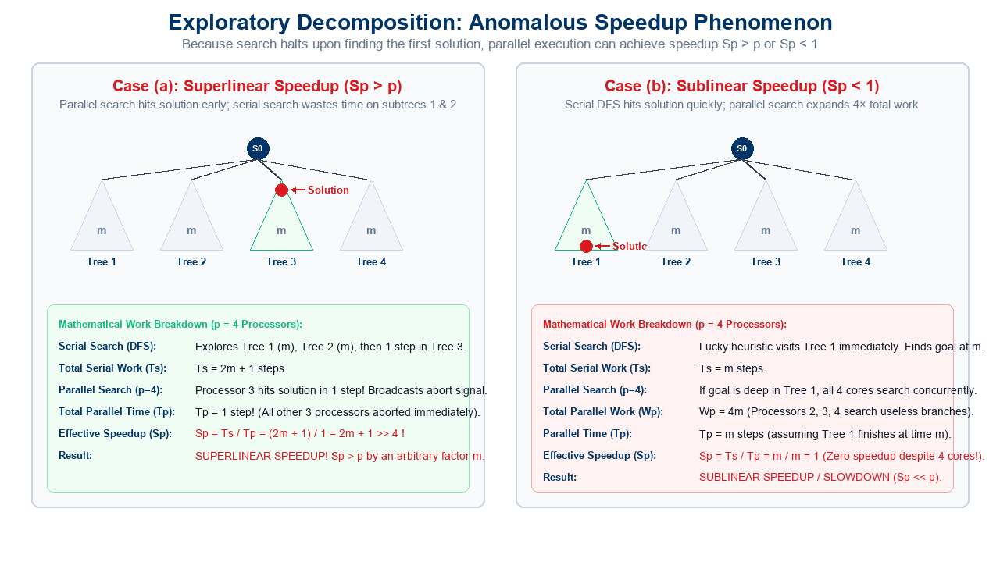
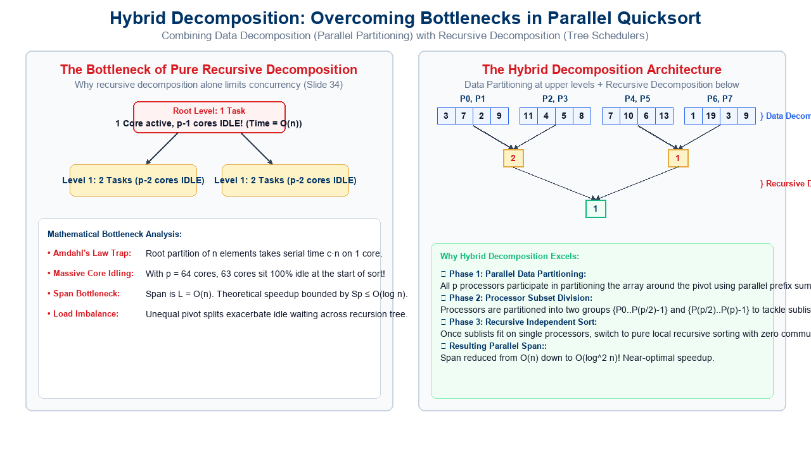

The Decomposition Imperative: Exposing Concurrency
In parallel algorithm design, raw compute capacity is useless without concurrency exposure:
The Core Challenge
Sequential Mindset:
Algorithms are structured as a linear sequence of instructions \(I_1 \to I_2 \to \dots \to I_m\).
Parallel Imperative:
We must shatter the problem into a collection of tasks that can be executed simultaneously on different processors.
The Central Question:
How does one systematically decompose a large problem into smaller subtasks such that concurrency is maximized while coordination overhead is minimized?
Partitions input, intermediate, or output data structures.
Exploratory Decomposition:
Dynamically explores discrete search spaces.
Speculative Decomposition:
Concurrently executes alternative control-flow branches.
Hybrid Decomposition:
Combines multiple techniques to eliminate serial bottlenecks.
Guiding Principle: Decomposition is the first and most critical step in Foster’s design methodology (PCAM: Partitioning, Communication, Agglomeration, Mapping). An improper decomposition permanently caps the maximum speedup achievable!
1. Recursive Decomposition: Divide-and-Conquer
Algorithmic Strategy
Recursive Decomposition induces concurrency in problems that naturally fit the divide-and-conquer paradigm:
Divide: Partition the problem into a set of independent subproblems of smaller size.
Conquer: Solve each subproblem recursively (concurrently on separate processing elements).
Combine: Merge the results of the subproblems to form the complete solution.
Natural Concurrency:
Subproblems at the same recursion depth operate on disjoint subdomains and can be evaluated simultaneously!
Concurrency Characteristics
Dynamic Task Generation:
Tasks are spawned at runtime as the recursion unfolds.
Tree-Structured Dependency:
Results bubble up the tree, creating logarithmic span reduction trees.
Major Examples:
Parallel Merge Sort and Quicksort.
Fast Fourier Transform (Cooley-Tukey FFT).
Matrix multiplication (Strassen’s algorithm).
Associative prefix reductions (Sum, Min, Max).
Key Insight: Tasks spawned across branches are strictly independent until the combine phase. Concurrency expands dynamically as recursion deepens.
Recursive Decomposition: Illustrative Examples

Case Study: Parallel Quicksort Decomposition
Consider sorting an array of \(n\) elements using Quicksort:
Recursive Partitioning Mechanics
Pivot Selection & Partitioning:
Select a pivot element (e.g., \(x = 5\)).
Rearrange elements such that all elements \(\le x\) are placed in the left sublist, and all elements \(> x\) are in the right sublist.
Concurrent Recursive Calls:
Once partitioned, the left sublist \(\{1, 3, 4, 2\}\) and right sublist \(\{12, 11, 10, 6, 8, 7, 9\}\) are completely independent.
Two concurrent tasks are spawned to sort each sublist recursively.
Recursion Termination:
Sublists of size \(\le 1\) are trivial base cases.
Concurrency & Limitations
Concurrency Expansion:
Level 0: \(1\) task (the root partition).
Level 1: \(2\) tasks.
Level 2: \(4\) tasks.
Level \(k\): \(2^k\) concurrent tasks!
The Upper-Level Bottleneck:
At the root (Level 0), only 1 processor can perform the initial partition!
If array size is \(n\), this step requires \(\Theta(n)\) sequential work.
All other \(p-1\) processors sit completely idle waiting for the root partition to finish!
Limitation of Pure Recursive Decomposition: While concurrency grows exponentially at lower levels, the root of the recursion tree acts as a severe sequential bottleneck. We will solve this via Hybrid Decomposition!
The problem of finding the minimum element in an array (or any associative operation such as Sum, Product, AND, OR) is traditionally written as a serial loop:
Sequential Formulation (SERIAL_MIN)
// Serial Loop for Minimum Computationprocedure SERIAL_MIN (A, n)begin min = A[0];for i :=1 to n -1doif(A[i]< min) then min := A[i]; endfor;return min;end SERIAL_MIN
Loop-Carried True Dependency:
Variable min is read and written in every single iteration.
Prevents naive vectorization or trivial parallel loop distribution without synchronization.
Complexity & Concurrency Metrics
Total Work (\(W\)): \[W = T_1 = n - 1 \text{ comparisons}\]
Critical Path Length (\(L\) or \(D\)): \[L = T_\infty = n - 1 \text{ steps}\]
Strictly sequential (\(1\) operation per time step). Zero concurrency!
Transforming to Divide-and-Conquer: RECURSIVE_MIN
We can rewrite the serial loop into a recursive divide-and-conquer formulation:
Recursive Formulation (RECURSIVE_MIN)
procedure RECURSIVE_MIN (A, n)beginif(n =1) then min := A[0];else// Left subproblem: first n/2 elements lmin := RECURSIVE_MIN (A, n/2);// Right subproblem: remaining elements rmin := RECURSIVE_MIN (&(A[n/2]), n - n/2);// Combine step: single comparisonif(lmin < rmin) then min := lmin;else min := rmin; endelse; endelse;return min;end RECURSIVE_MIN
Mathematical Recurrence
Work Recurrence (\(W(n)\)): \[W(n) = 2\,W(n/2) + \Theta(1) \implies W(n) = n - 1\]Total computational work is identical to SERIAL_MIN!
Average Degree of Concurrency: \[\text{Concurrency} = \frac{W(n)}{L(n)} = \frac{n - 1}{\log_2 n}\]
For \(n = 1024\): \(W = 1023\), \(L = 10\), Average Concurrency \(\approx 102\)!
Key Result: By reorganizing the order of associative operations from linear to tree-structured, the critical path drops exponentially from \(\Theta(n)\) down to \(\Theta(\log n)\) while preserving optimal \(O(n)\) total work!
RECURSIVE_MIN: Task Dependency Graph Analysis
Let us trace RECURSIVE_MIN on the input set \(\{4, 9, 1, 7, 8, 11, 2, 12\}\) (\(n = 8\) elements):
Topological Execution Levels
Level 1 (Leaves - 4 Concurrent Tasks):
Task 1: \(\min(4, 9) = 4\)
Task 2: \(\min(1, 7) = 1\)
Task 3: \(\min(8, 11) = 8\)
Task 4: \(\min(2, 12) = 2\)
All 4 tasks can execute in parallel!
Level 2 (Intermediate - 2 Concurrent Tasks):
Task 5: \(\min(4, 1) = 1\)
Task 6: \(\min(8, 2) = 2\)
Level 3 (Root - 1 Final Reduction Task):
Task 7: \(\min(1, 2) = 1\) (Global minimum)
DAG Properties:
Total Tasks \(|V| = 7 = n - 1\).
Span \(= 3 = \log_2 8\) time steps.
2. Data Decomposition: Foundations
Core Philosophy
In data-intensive computing, the computation is fundamentally structured around large datasets (arrays, matrices, tables, graphs).
The Data Decomposition Principle:
Identify the primary data structures on which computations are performed.
Partition the data across multiple concurrent tasks.
This partitioning induces a decomposition of the overall computational problem!
The choice of data partitioning critically impacts load balance, communication frequency, and memory bandwidth utilization.
Forms of Data Decomposition
Data decomposition can be applied to different stages of the computation pipeline:
Output Data Decomposition:
Partition the output data structure; each task computes a disjoint subset of output elements.
Input Data Decomposition:
Partition the input data structure; each task processes a subset of the inputs.
Intermediate Data Decomposition:
Partition intermediate representations generated during multi-stage computations.
Input + Output Combined Decomposition:
Simultaneously partition both input and output domains.
The Driving Rule: How we partition data directly dictates what communication is necessary. If task \(T_i\) needs input data owned by \(T_j\), a communication or memory synchronization event must occur!
Output Data Decomposition: Matrix-Matrix Multiplication
Consider multiplying two \(n \times n\) dense matrices \(A\) and \(B\) to yield output matrix \(C = A \cdot B\):
\[C_{i,j} = \sum_{k=1}^n A_{i,k} \cdot B_{k,j}\]
4-Task Block Partitioning (\(2 \times 2\))
We partition the output matrix \(C\) into four equal \(n/2 \times n/2\) sub-blocks:
The four output tasks have zero write conflicts; they write to disjoint memory buffers.
Maximum degree of concurrency \(= 4\).
Read-Only Input Sharing:
Block \(A_{1,1}\) is read by both Task 1 and Task 2.
Block \(B_{1,1}\) is read by both Task 1 and Task 3.
Since input data is read-only, it can be concurrently read or replicated across processors without locks.

Non-Uniqueness of Output Data Decomposition
A specific partitioning of the output data does not result in a unique task decomposition:
Decomposition I (8 Tasks)
Divide each block computation into two separate tasks (Multiply, then Accumulate):
Task 1: \(C_{1,1} = A_{1,1} B_{1,1}\)
Task 2: \(C_{1,1} = C_{1,1} + A_{1,2} B_{2,1}\)
Task 3: \(C_{1,2} = A_{1,1} B_{1,2}\)
Task 4: \(C_{1,2} = C_{1,2} + A_{1,2} B_{2,2}\)
Task 5: \(C_{2,1} = A_{2,1} B_{1,1}\)
Task 6: \(C_{2,1} = C_{2,1} + A_{2,2} B_{2,1}\)
Task 7: \(C_{2,2} = A_{2,1} B_{1,2}\)
Task 8: \(C_{2,2} = C_{2,2} + A_{2,2} B_{2,2}\)
Decomposition II (8 Tasks)
Alternative accumulation order exploiting commutativity of addition:
Task 1: \(C_{1,1} = A_{1,1} B_{1,1}\)
Task 2: \(C_{1,1} = C_{1,1} + A_{1,2} B_{2,1}\)
Task 3: \(C_{1,2} = A_{1,2} B_{2,2}\)
Task 4: \(C_{1,2} = C_{1,2} + A_{1,1} B_{1,2}\)
Task 5: \(C_{2,1} = A_{2,2} B_{2,1}\)
Task 6: \(C_{2,1} = C_{2,1} + A_{2,1} B_{1,1}\)
Task 7: \(C_{2,2} = A_{2,1} B_{1,2}\)
Task 8: \(C_{2,2} = C_{2,2} + A_{2,2} B_{2,2}\)
Architectural Implications: Although Decompositions I and II perform the exact same mathematical operations, Decomposition I exhibits superior spatial locality in L1 cache because Tasks 1 and 3 both read block \(A_{1,1}\) consecutively!
Data Decomposition in Databases: Frequent Itemsets
Consider the problem of counting the frequencies of candidate itemsets within a database of retail transactions:
The Problem Setting
Input Data:
Transaction Database: A collection of transactions, each containing a set of purchased items (e.g., \(\{A, B, C, E, G, H\}\)).
Candidate Itemsets:
A catalog of candidate patterns whose frequencies must be evaluated (e.g., \(\{A, B, C\}\), \(\{D, E\}\), \(\{C, F, G\}\)).
Output Data:
A frequency table mapping each candidate itemset to its occurrence count in the database.
Partitioning Options
Depending on whether memory or communication is the primary constraint, we can partition: 1. Output Frequencies: - Partition candidate itemsets across tasks. - Transaction database is replicated on all nodes. 2. Input Transactions: - Partition transaction database across tasks. - Tasks compute partial counts. 3. Both (2D Grid): - Simultaneously partition transactions and itemsets.
Fundamental Systems Dilemma: Replicating input transactions eliminates communication but duplicates memory footprint; partitioning transactions conserves RAM but requires an all-reduce synchronization to aggregate partial counts!
Data Decomposition Paradigms: Database Transaction Mining
A visual comparison of the three fundamental partitioning paradigms in database transaction mining :

Input vs. Output Data Decomposition Comparison
Let us analyze the systems trade-offs of the two basic schemes:
Feature / Dimension
Output Data Decomposition
Input Data Decomposition
What is Partitioned?
Candidate itemsets (Output frequencies)
Transaction database (Input transactions)
What is Replicated?
Full transaction database replicated on all nodes
Candidate itemset catalog replicated on all nodes
Task Independence
100% Independent: Each task computes exact global frequencies for its assigned itemsets.
Partial Results: Each task computes partial counts over its local transaction slice.
Communication Needed
Zero Communication: No message passing required during or after search!
Global Reduction Required: All partial counts must be summed via MPI_Reduce or tree reduction.
Memory Bottleneck
Node memory must be large enough to hold the entire transaction database.
Scales to massive databases; each node only stores a small shard of transactions.
Best Used When
Database fits comfortably in RAM; candidate itemset catalog is massive.
Database is too large for single-node RAM (Big Data / Out-of-Core).
Synthesis Insight : If transactions are replicated, zero communication is needed. If transactions are partitioned, each task computes partial counts that are subsequently aggregated across processes.
Combined Input & Output Partitioning (2D Grid)
When both the transaction database and the candidate itemset catalog exceed the memory capacity of individual compute nodes, we utilize a 2D Grid Decomposition:
2D Task Grid Assignment
Partition transactions into 2 subsets (\(T_{\text{sub1}}, T_{\text{sub2}}\)).
Partition itemsets into 2 subsets (\(I_{\text{sub1}}, I_{\text{sub2}}\)).
Creates 4 Concurrent Tasks:
Task 1: Evaluates \(I_{\text{sub1}}\) on \(T_{\text{sub1}}\)\(\implies\) Partial Counts \(P_{1,1}\).
Task 2: Evaluates \(I_{\text{sub2}}\) on \(T_{\text{sub1}}\)\(\implies\) Partial Counts \(P_{1,2}\).
Task 3: Evaluates \(I_{\text{sub1}}\) on \(T_{\text{sub2}}\)\(\implies\) Partial Counts \(P_{2,1}\).
Task 4: Evaluates \(I_{\text{sub2}}\) on \(T_{\text{sub2}}\)\(\implies\) Partial Counts \(P_{2,2}\).
Aggregation Pipeline
Column-Wise Reduction:
Global frequency for \(I_{\text{sub1}}\) is computed by summing Task 1 and Task 3: \[\text{Freq}(I_{\text{sub1}}) = P_{1,1} + P_{2,1}\]
Global frequency for \(I_{\text{sub2}}\) is computed by summing Task 2 and Task 4: \[\text{Freq}(I_{\text{sub2}}) = P_{1,2} + P_{2,2}\]
Key Advantage:
Memory requirement per node is cut in half along both dimensions!
3. Intermediate Data Partitioning: Multi-Stage Pipelines
A complex computation is rarely a one-step mapping; it is often a multi-stage sequence of transformations:
Sometimes, neither input nor output decomposition exposes sufficient concurrency.
By partitioning an intermediate data structure, we can:
Expose a much higher degree of parallelism in the initial stages.
Decouple complex multi-operand interactions into pipelined, independent stages.
Pipelined Dataflow:
Intermediate stages can overlap in time, creating continuous computational throughput across processors.
Strategic Value in HPC
Bypassing Output Concurrency Caps:
In an \(n \times n\) problem, output block partitioning produces at most \(b^2\) tasks.
Intermediate partitioning can scale concurrency to \(b^3\) tasks!
Foundation of 3D Parallel Algorithms:
Forms the conceptual core of 3D Matrix Multiplication, 3D FFTs, and multi-pass parallel database joins.
Key Principle : Computation can often be viewed as a sequence of transformations from input to output. Using intermediate stages as a basis for decomposition exposes latent concurrency!
Key Result: Compared to standard output decomposition (which offered at most 4-way concurrency), intermediate data partitioning doubles concurrency to 8-way! This is the foundation of 3D Matrix Multiplication algorithms (e.g., Agarwal et al. / Cannon 3D).
From Data Decomposition to Process Mapping: The Owner-Computes Rule
How do we systematically translate a data decomposition into executable process assignments?
Formal Definition
The Owner-Computes Rule states that the process assigned a particular data item is responsible for executing all computations associated with producing (or consuming) that data item.
In Output Data Decomposition:
The process that owns output data item \(O_k\) performs all computations required to evaluate \(O_k\).
Process fetches remote input data as needed.
In Input Data Decomposition:
The process that owns input data item \(I_k\) performs all computations that operate on \(I_k\).
Process sends partial results to remote owners.
Systems Implementation
Distributed Memory (MPI):
Process owning an array block allocates local RAM.
Requires explicit MPI_Send / MPI_Recv or MPI_Bcast to bring non-local data into the local workspace prior to computation.
Shared Memory (OpenMP):
Expressed via #pragma omp for schedule(static).
The thread assigned a loop index chunk writes exclusively to its private cache lines, minimizing cache invalidation traffic (false sharing).
4. Exploratory Decomposition: Search Space Concurrency
In many high-performance computing applications, the decomposition of a problem goes hand-in-hand with its execution:
Dynamic Search Spaces
In Exploratory Decomposition, the algorithm searches an irregularly shaped solution space.
The structure of the task dependency graph is not known a priori; tasks are generated dynamically as candidate states are generated and evaluated.
Nodes represent states; edges represent valid state transitions.
Unpredictable Task Duration:
One branch may terminate in 2 steps; another may search millions of nodes.
Early Termination:
If the objective is to find any valid solution, all ongoing concurrent tasks can be aborted the moment the first solution is discovered!
Dynamic Load Balancing Essential:
Static compile-time mapping is impossible due to unpredictable branch lengths.
Fundamental Property: Unlike data decomposition where total work \(W\) is fixed regardless of processor count, total work in exploratory decomposition varies wildly depending on execution ordering!
State-Space Search & The 15-Puzzle: Task Generation
Exploratory decomposition on the 15-Puzzle tile sliding benchmark and state-space tree generation :

Exploratory Decomposition Case Study: The 15-Puzzle
The 15-puzzle consists of 15 numbered tiles in a \(4 \times 4\) grid with one blank position:
Problem Formulation
State Representation:
A permutation of the numbers \(\{1, 2, \dots, 15, \text{blank}\}\).
Move Generation:
From any current state, between 2 and 4 valid moves exist (sliding an adjacent tile into the blank space).
Search Complexity:
Total reachable states \(= 16! / 2 \approx 1.04 \times 10^{13}\).
Shortest solution path may require up to 80 moves!
Exploratory Parallelization
Root State \(S_0\):
Initial configuration of tiles.
Branch Expansion:
Generate successor states \(S_1, S_2, S_3, S_4\).
Assign each successor subtree as an independent concurrent task to a distinct process!
State Pruning:
Duplicate states or states exceeding current cost bounds are pruned dynamically.
Fundamental Property: Unlike data decomposition where the total work \(W\) is fixed regardless of processor count, the total work performed in exploratory decomposition varies wildly depending on execution ordering!
Exploratory Decomposition: The Anomalous Speedup Phenomenon
Because unfinished tasks can be immediately terminated when the first solution is found, exploratory parallel search exhibits anomalous speedups :
Superlinear Speedup (\(S_p > p\))
Occurs when parallel search explores the winning branch earlier than a serial search algorithm would.
Case (a):
4 subtrees of size \(m\). Solution is in Tree 3 at step 1.
Serial search (DFS left-to-right) explores Tree 1 (\(m\)), Tree 2 (\(m\)), then step 1 of Tree 3: \[T_s = 2m + 1\]
Parallel search on 4 processors: Processor 3 hits the solution in 1 time step: \[T_p = 1 \implies S_p = \frac{T_s}{T_p} = 2m + 1 \gg 4!\]
Sublinear Speedup / Slowdown (\(S_p < 1\))
Occurs when serial search luckily hits the solution immediately, whereas parallel search wastes cores on fruitless subtrees.
Case (b):
Serial search explores Tree 1 and hits the solution at step \(m\): \[T_s = m\]
Parallel search assigns 4 processors. All processors do work concurrently (\(W_p = 4m\)).
If parallel synchronization or tree overhead dominates: \[T_p = m \implies S_p = \frac{m}{m} = 1 \ll 4\]
Key Insight: The work performed by an exploratory parallel search algorithm is non-deterministic and can be strictly less than (\(W_p \ll W_s\)) or strictly greater than (\(W_p \gg W_s\)) the serial work!
Anomalous Speedup: Search Tree Topologies
Visualizing early termination work discrepancies in parallel tree search:

5. Speculative Decomposition
Speculative decomposition is utilized when a program encounters computationally significant branches whose outcome depends on prior incomplete computations:
Motivation & Execution Model
Suppose task \(A\) is computing a boolean condition flag that will take 1,000,000 cycles.
Depending on flag, the program will either execute branch task \(B_{\text{true}}\) or branch task \(B_{\text{false}}\).
Speculative Strategy:
Instead of letting idle cores sit idle waiting for \(A\) to finish, launch \(B_{\text{true}}\) (or both \(B_{\text{true}}\) and \(B_{\text{false}}\)) concurrently with \(A\)!
Rollback Requirement:
If speculation was correct: Huge speedup!
If speculation was incorrect: Discard computed state, restore checkpoint, and take the correct branch.
Two Execution Strategies
Conservative Approach:
Only execute tasks whose inputs are guaranteed to be independent and valid.
Zero rollback overhead, but misses opportunities for speculative concurrency.
Optimistic Approach:
Concurrently execute the most promising branch.
Requires checkpointing architecture and state rollback if prediction fails.
Ubiquitous in hardware branch prediction, Software Transactional Memory (STM), and optimistic discrete-event simulation (Time Warp).
Speculative vs. Exploratory Decomposition: The Deep Architectural Contrast
Students frequently confuse Speculative and Exploratory decomposition.
Speculative Decomposition
In Speculative Decomposition, the INPUT at a branch leading to multiple parallel tasks is UNKNOWN.
The tasks themselves are deterministic functions, but we do not yet know which branch will be selected by the decider task.
Computational work is speculative and may be discarded entirely upon branch resolution.
Common in branch prediction, Software Transactional Memory (STM), and optimistic discrete-event simulation.
Exploratory Decomposition
In Exploratory Decomposition, the OUTPUT of multiple tasks originating at a branch is UNKNOWN.
The input state is known and valid.
We launch tasks into multiple subtrees because we do not know which subtree contains a valid solution.
Unfinished tasks are terminated as soon as the first valid solution is found.
Key Distinction: Speculative tasks gamble on which control path will be taken (requiring rollback on misprediction); exploratory tasks gamble on where a solution resides (pruning unpromising subtrees upon discovery).
Structural Comparison: Speculative vs. Exploratory Workflows
Visualizing control-flow branch speculation with rollback vs. search-space tree expansion with early cancellation:
Synthesize Data Decomposition with Recursive Decomposition:
Upper Levels (Data Decomposition):
All \(p\) processors cooperatively partition the \(n\)-element array around the pivot using parallel prefix sums (Span \(= O(\log n)\)).
Lower Levels (Recursive Decomposition):
Sublists are partitioned among disjoint processor subsets: \(\{P_0..P_{p/2-1}\}\) and \(\{P_{p/2}..P_{p-1}\}\).
Leaf Level (Independent Local Sort):
When sublists fit within private caches, switch to pure sequential sort without communication!
Key Insight: Combining data decomposition at the top of the recursion tree with recursive task spawning at the bottom eliminates the serial root bottleneck while preserving independent divide-and-conquer concurrency.
Case Study: Hybrid Quicksort Architecture

Key Takeaways: Lecture 17 Summary
1. The Core Decomposition Taxonomy
Recursive Decomposition:
Divide-and-conquer turns linear loop dependencies into logarithmic span trees (\(L = O(\log n)\)).
Data Decomposition:
Partitioning output data produces independent tasks; partitioning input data produces partial counts needing reduction; intermediate partitioning exposes multi-stage concurrency.
The Owner-Computes Rule:
Formalizes process responsibility in shared and distributed memory architectures.
2. Search & Speculative Concurrency
Exploratory Decomposition:
Problem decomposition unfolds dynamically during state-space traversal.
Early termination upon finding a goal induces anomalous superlinear or sublinear speedups.
Speculative Decomposition:
Evaluates alternative branch paths before decider completes (unknown input vs. unknown output).
Hybrid Decomposition:
Eliminates serial root bottlenecks in recursive algorithms (e.g., parallel partitioning in Quicksort).